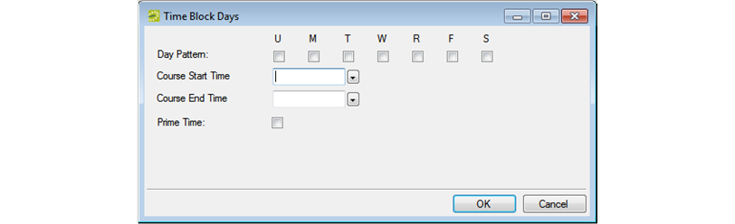

Configure Time Block Templates
A time block template is an aggregate of individual, unique meeting patterns for a course, for example, MWF from 2:00 to 2:50 pm, TR from 1:30 to 2:50 pm, and M from 1 to 3:50 pm. You can use time block templates to limit the meeting patterns that are available during Define & Edit mode or Dual mode, to add weight to courses that comply with the template during optimization, and in academic reporting. You can manually configure time block templates, or if time block patterns from a previously configured term meet your needs, then you can import these time patterns and make a new template. During the configuration of time block patterns, or after importing time block patterns, if any of these patterns are the ones that are the most frequently requested and/or used for courses, then you can designate these patterns as prime time.
- On the EMS Academic Planning menu bar, click Academic Planning > Configuration > Time Block Templates. The Time Block Templates window opens. This window lists all the time block templates that are currently configured in your EMS database. The window also shows the total number of class meetings possible for each template according to the time block (day and time) pattern for the template.

- Click New. The Time Block Template dialog box opens. The Time Block Template tab is the active tab.
- In the Description field, enter a name or description for the new time block template.
The description can be a maximum of 50 characters, including spaces.
- Continue to one of the following:
Configuring Time Block Templates
- Open the Day Patterns tab and click New. The Time Block Days dialog box opens.
Time Block Days Dialog

- On the Time Block Days dialog box, select the day pattern for the course, and then select a start time and an end time.
- Optionally, if the day and time pattern that you are configuring is one that is the most commonly requested and/or used for courses, then select Prime Time.
As described here, you can individually specify a day and time pattern as Prime Time, or after you configure multiple patterns for a course, you can select them on the Day Patterns tab and mark them all as Prime Time in a single step. See Step 6.
- Click OK. The Time Block Days dialog box closes. You return to the Day Patterns tab with the newly configured pattern automatically selected.

- Repeat Step 1 through Step 4 until you have configured all the needed time block patterns.
- Optionally, if multiple patterns listed on the Day Patterns tab are the most commonly requested and/or used for courses, and you want to set these courses as Prime Time, go to Step 7; otherwise, go to Step 8.
- CTRL-click to select these patterns, and then select Set Prime Time. A message opens, asking you if it is OK to set the selected days as Prime Time. 8. Click OK. The message closes and you return to the Day Patterns tab.
- Click OK. The Time Block Template dialog box closes. You return to the Time Block Templates window with the newly configured time block template automatically selected.
Importing Time Block Patterns for a Template
- Open the Day Patterns tab, and on the tab, click Import. The Term Picker dialog box opens. This dialog box lists all active terms by domain.

- On the Domain drop-down list, select the appropriate domain, select the term for the domain that contains the time block patterns that you are importing, and then click OK. A confirmation message displays.
- Click OK to close the message and return to the Day Patterns tab. The time block template is created. All the imported time patterns for the template are listed on the tab.

- Optionally, do one or both of the following:
- If any of the patterns listed on the Day Patterns tab are not needed for the template you are configuring (for example, a non-standard pattern), you can delete them as follows:
- Select the pattern, or CTRL-click to select multiple patterns, and then click Delete. A message prompts you to confirm that it is OK to delete the selected patterns.
- Click Yes to delete the selected patterns. The message closes and you remain on the Day Patterns tab.
- If any of the patterns listed on the Day Patterns tab are the most commonly requested and/or used for courses, you can set these courses as Prime Time as follows:
- Select the pattern, or CTRL-click to select multiple patterns, and then click Set Prime Time. You are prompted to confirm that it is OK to set the selected days as Prime Time.
- Click Yes to set the selected patterns as Prime Time. The message closes and you remain on the Day Patterns tab.
- Click OK. The Time Block Template dialog box closes. You return to the Time Block Templates window with the newly configured time block template automatically selected.